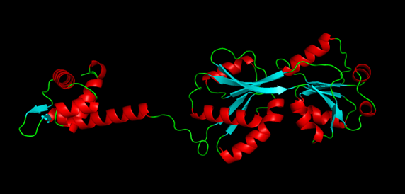
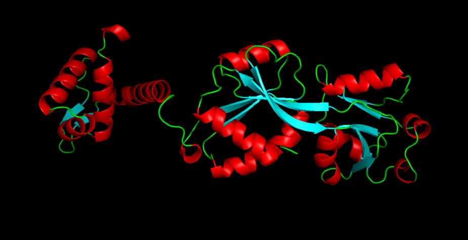
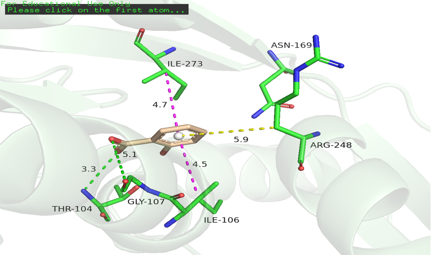
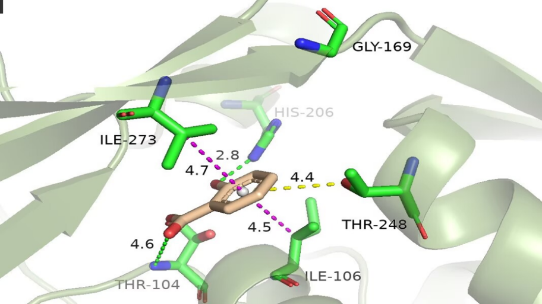
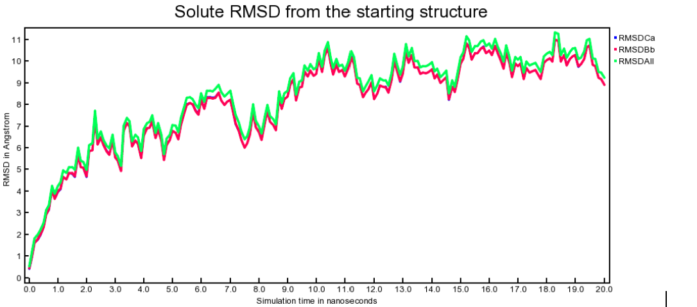
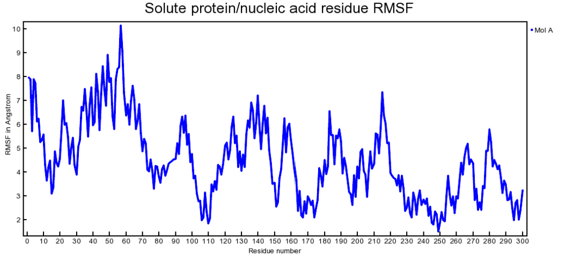
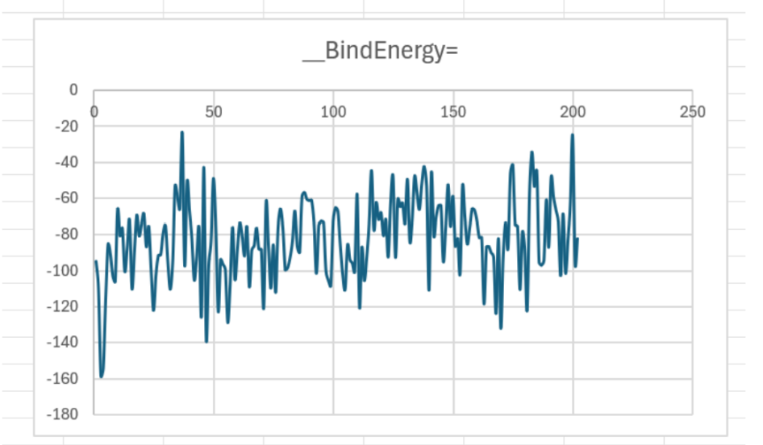
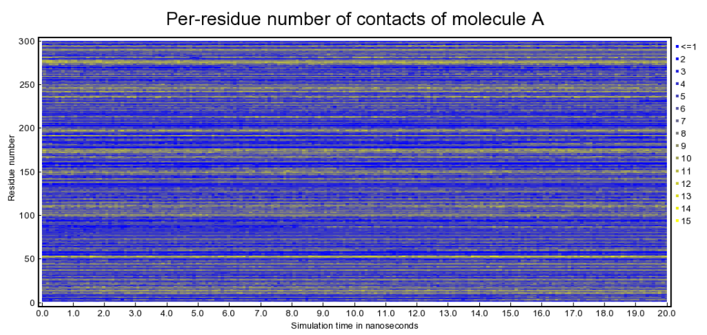
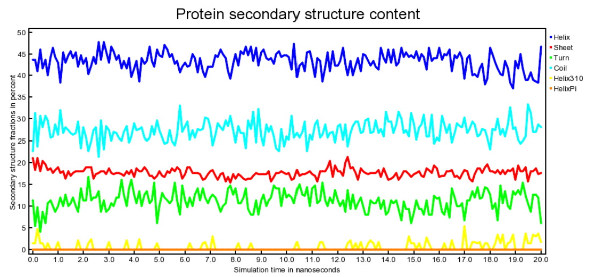

Background & Objectives
The biosensing strain E. coli DH5α MUT3rd relies mainly on the NahR transcription factor to recognize salicylic acid, which in turn activates the \(P_{nah}\) promoter, thereby leading to downstream GFP expression. The binding affinity between NahR and salicylic acid directly determines the sensor's sensitivity and lower limit of detection (LOD).
In wet-lab experiments, the isolated mutant 118 (G169T248) exhibited a significantly enhanced fluorescence signal compared to the wild-type (WT). To elucidate the structural mechanism underlying this performance improvement, we established a protein modeling pipeline addressing two key questions:
- Static Binding Prediction: Utilizing AlphaFold2 to predict the monomeric structures of WT and mutant NahR, followed by molecular docking to evaluate binding differences with salicylic acid.
- Dynamic Stability Verification: Molecular Dynamics (MD) simulations were performed to evaluate complex stability, providing a rational estimation of the mutant's dynamic behavior.
Ultimate Goal: Establish a predictive framework bridging "Structure → Binding Affinity → Dynamic Stability" to guide further mutant design and biosensing performance optimization.
Model Design & Assumptions
Multi-layer strategy
We implemented a hierarchical strategy combining Structure Simulation → Static Molecular Docking → Dynamic Simulation:
- AlphaFold2 Structural Prediction: Predicted the three-dimensional monomeric structures of WT and mutant NahR.
- Static Molecular Docking: Evaluated the immediate binding and interaction scores. Based on the scoring convention of our YASARA system, a more positive score indicates stronger binding affinity (kcal/mol).
- Molecular Dynamics (MD) Simulation: Evaluated the thermodynamic stability. Under our MD system, a more negative potential/binding energy indicates greater complex stability (kJ/mol).
Note: Docking scores and MD binding free energies use different units and opposite dimensional definitions. They are not directly compared numerically, but are instead applied separately for "static screening" and "dynamic verification."
Model hypotheses & simplifications
- AlphaFold2 predicted structures accurately approximate the native protein conformations.
- The receptor backbone remains rigid during initial static docking calculations.
- Docking scores reliably reflect relative binding trends among variants.
- MD systems reach local equilibrium within the simulated timeframe.
- Mutant dynamic behaviors can be conservatively predicted based on WT empirical trajectory data combined with comparative docking results, serving as structural hypotheses prior to further wet-lab validation.
Methodology & Simulation Parameters
Structural prediction
AlphaFold2 was used to predict the monomer structures of wild-type and mutant 118(G169T248) NahR. Both display the characteristic structure of the LysR family: a conserved N-terminal HTH domain and a C-terminal substrate-binding domain.


Molecular docking & binding site definition
YASARA was utilized to dock wild-type/mutant NahR monomers with salicylic acid at the C-terminal inducer-binding pocket. The output docking scores are in kcal/mol (more positive values indicate stronger binding under our criteria).
Docking Results: Directly interacting residues in the wild type are Thr104, Ile106, and Ile273; in the mutant, they are Thr104, Ile106, His206, and Ile273.


Molecular dynamics (MD) simulation
Based on a 20 ns simulation trajectory, binding free energy (kJ/mol; more negative indicates higher stability) was calculated. Analysis metrics include RMSD, RMSF, binding free energy, DCCM, residue contact numbers, and secondary structure.
Key parameters table
Wild-type values are directly measured from MD simulation; mutant values are estimated from comparative docking and WT trajectory trends.
| Parameter | Wild-Type (measured) | Mutant 118(G169T248) (estimated) |
|---|---|---|
| Docking score (kcal/mol) | -6.8 | -7.5 |
| MD binding free energy (kJ/mol) | -82.01 | -98.64 |
| RMSD plateau (Å) | 9–11 Å | Expected to be similar or slightly lower |
| Mutation site RMSF (Å) | Asn169: 2.251; Arg258: 2.217 | Gly169 expected lower; Thr248 expected similar |
Results & Comparative Analysis
Wild-Type MD measured results
- RMSD: Stabilized after 10 ns, fluctuating within a narrow range of 9–11 Å, indicating system equilibrium.
- RMSF: Most residues remained below 6 Å. Residues 50–60 at the N-terminus exceeded 10 Å, indicating a highly flexible region, while residues 240–260 remained below 2 Å, indicating a core rigid region.
- Binding Energy: Average binding energy was -82.01 kJ/mol.
- DCCM: Showed strong positive correlation within the core domain and weak anti-correlation between domains, confirming conformational stability.
- Residue Contacts & Secondary Structure: Hydrophobic core maintained high contact numbers, while surface residues had low contacts, indicating a stable tertiary structure. Secondary structure content remained stable, at 40–47% α-helices and 15–20% β-sheets.





Mutant 118(G169T248) MD results (estimated)
- Folding & RMSD: Overall folding is consistent with the wild type, with an RMSD plateau at approximately 8–10 Å.
- RMSF: The smaller side chain of Gly169 is expected to further reduce RMSF. At position 248, RMSF is expected to be similar to or slightly lower than the wild type.
- Binding & Energy: Docking suggests His206 forms a new hydrogen bond with salicylic acid (~2.8 Å), and binding distances for Thr248 and Ile273 are shortened. The estimated binding energy is approximately -98.64 kJ/mol, indicating stronger, more stable binding.
- Structural Metrics: DCCM, residue contacts, and secondary structure are expected to be consistent with the wild type.
Mutant 118(G169T248) is estimated to bind salicylic acid more strongly (docking score -7.5 kcal/mol vs. -6.8 kcal/mol for WT) and more stably (estimated MD binding energy -98.64 kJ/mol vs. -82.01 kJ/mol for WT), consistent with its enhanced fluorescence signal observed in wet-lab experiments.
Model Application & Significance
1. Guidance for wet-lab optimization: The Asn→Gly substitution at position 169 may facilitate the entry and exit of salicylic acid in the binding pocket. The additional hydrogen bond formed by His206 with salicylic acid likely enhances binding stability. Shortened binding distances for Thr248 and Ile273 suggest increased binding affinity. Enhancing NahR affinity is expected to reduce \(K_M\) in data modeling, thereby lowering the limit of detection (LOD).
2. Performance prediction for mutants: Protein modeling indicates mutant 118(G169T248) binds more strongly and stably. Data modeling predicts lower \(K_M\) and LOD.
3. Project contributions: Provided empirical MD simulation data for wild-type NahR. Offered reasonable predictions for mutant MD behavior. Provided a preliminary structural basis explaining enhanced fluorescence and sensitivity in the mutant. Provided structural references for subsequent MD simulations and wet-lab experimental validation.